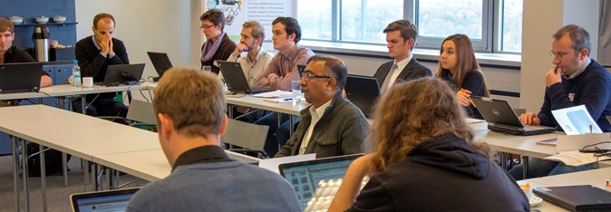

The two focused tracks in the Vidi competition seek prototypes that solve a particular problem:
- Simplificator - Most knowledge and reports about breakthrough research is by definition domain-specific, however seemingly impenetrable ideas can be made possible to understand by small changes. Simplificator FT calls for applications easing access to complex information by summarizing them in a simpler form.
- Pathfinder - Learning opportunities are not always easily discoverable, and rarely come with strong support for identifying, comparing and selecting the ones that can be most beneficial to the (potential) learner. Recommender FT calls for applications easing access to recommendation and guidance when chosing appropriate curriculum of courses and related resources.
Track 1: Simplificator
What should I do?
Develop a tool/application that provides a simplified version of domain-specific, complex documents, making complex, sectoral texts easier to understand to novice/non-expert people.
What is it and why is it important?
Whether in the sciences or humanities, most of today's knowledge and reports about breakthrough research is domain-specific and written up by experts. People trying to understand and share ideas and concepts about disciplines that they are new to face challenges while attempting to get up to speed. A significant aspect of this is needing to learn domain-specific terms and ideas that can rapidly put knowledge in an appropriate context. Seemingly impenetrable ideas can be understood if access and references to simpler, less domain specific, or language appropriate resources are available.
Wherever possible in learning, the gap of understanding and comprehension between the novice and the expert should be narrowed as much as possible. Learning new material and being a novice is not limited to the young. Many emerging areas of study are interdisciplinary, combining such disciplines as: health science and public policy, chemistry and business, geography and sociology, or anthropology and business. Often, new learners in these area bring with them expertise in one field, but need to quickly become proficient in the other. Closing this gap can make education accessible and attractive to all.
In other examples, people facing serious illness, either themselves or loved ones, could try to understand the current status of research to make informed decisions about medical treatments. Immigrants, may find themselves dealing with new and complex corpora of rules and legal terms, and needing additional resources more suitable for them.
Imagine the challenge of being able to make some of the most notable works in science history more accessible to the world. How about the ability to pique the interest of a young student to the world of physics by providing resources to better comprehend Einstein's Theory of Relativity? Or the ability to add 21st century resources to the most well-known and often cited works such as the Origin of Species? One could also envisage bringing literature to life with maps and links to help understand the context of the characters day-to-day lives.
What is already out there?
Technologies that enabled auto linking from web content to a definition or other types of resource have been fairly commonplace for several years. They have typically relied on hard coded links to glossaries, lists and other datasets that are relatively small. In addition, they require extra attention and maintenance to keep them up to date and accurate. With the maturity of Linked Data, there is potential to scale these applications to connect larger sets, more dynamically, and with persistent links.
What tools or techniques could or should I use?
There are many general-purpose encyclopedias and other reference tools available that allow you to find definitions, synonyms, related terms and other useful information that adds context and meaning to a term. Many are well structured and lend themselves for the type of applications the challenge is seeking. These include services such as DBPedia, Freebase, Open Calais, and several others.
For translating between languages, automatic translation sevices are available. These include Wordnet and several other projects.
Visual summaries are another approach for providing an overview on what a text is about. Popular visualizations include word trees, tag clouds, word clouds, and phrase nets (as, for example, on IBM's Many Eyes).
The challenge is to select, combine and insert explanatory material that complements the material without distracting or overwhelming readers. Typical 'adaptive' techniques (see Peter Brusilovsky's 'classic' article on Adaptive Hypermedia) include content-on-demand, adaptive highlighting, stretchtext, pop-ups, comments in the margins, overview maps, visual summaries and content variation.
What would make my submission a good one?
Ideal submissions would make innovative use of current technologies or even showcase a new technology. Extra consideration will also be given for applications that make use and combine existing data in original ways. As mentioned above, applications should complement and enhance material. Where possible, a submission would be portable. That is, able to be reused with new datasets with a minimal amount adjustments to the application. Additional benchmarks will measure text summarisation techniques.
In this focused track we target applications that:
- make complex,domain-specific texts easier to understand to novice/non-expert people by elaborating a simple summary
- analyse and summarise complex abstracts and research in simpler terms - eventually a ‘hierarchy of simplicity’ to create ‘versions’ for different ages and abilities (via a simple and intuitive textual/graphical representation, i.e. knowledge map)
- link difficult words to wiktionary / wikipedia, offering wiki-style crowdsourcing of improvements
- offer this “simplification” support to learners in other ways we didn't envisage above
Datasets
Competitors are encouraged to find content on the web that they would like to incorporate into the Simplificator applications. However, the LinkedUp team has been working to prepare some materials for the competition:
- The LinkedUp data catalog created for the LinkedUp Challenge contains some scholarly papers which naturally are very complex and a good source for simplification and summarisation.
- The LAK Dataset: A large corpus of research literature related to Learning Analytics is publicly available in machine-readable formats. This dataset was curated and launched by researchers from the Society for Learning Analytics Research (SoLAR), the LinkedUp project, and the Educational Technology Institute of the National Research Council of Italy (CNR-ITD). Content from this dataset could also be considered good candidates for material that could be Simplified. For more information about the content, check out the LinkedUp Blog.
- For the competition, Elsevier will be showcasing data and content around the interdisciplenary topic of water use and water footprinting, which measures how individuals and municipalities, companies and industries, use water resources. The field touches on many areas including geography, hydrology, sustainability, water quality, policy, and business. For the Simplificator, it would be interesting to see if the content and data in this collection could be Simplified. In particular, we believe this will provide opportunities for cross-discipline interpretation of texts and data.
Requirements
- 'Data-driven' - The submission should use at least one dataset; using web data and providing number of resources. Web data does not necessary available on the Web, but using standard Web protocols.
- The application should use at least two other datasets for enriching the resource.
- The submission should be innovative and using current technology, making innovative use of existing technologies, or use and combine existing data in original ways.
How will this be evaluated?
You should provide some form of evaluation that your Simplificator submission actually makes resources easier to understand. We suggest one or more of the following evaluation methods:
- A controlled user study in which the 'simplified' resources are compared with the original resources, in terms of comprehension, reading time, memorizability, or some other suitable 'human' performance measure
- A qualitative user study that addresses the above-mentioned 'human' performance measures, along with more detailed user feedback
- The ROUGE metric as a benchmark for your automatic summary
- A readability score, such as Flesch Reading Ease or Dale-Chall readability formula (see Wikipedia for some examples). There are also online tools available
Relationship to use cases
Track 2: Pathfinder
What should I do?
Develop a tool that suggests courses, MOOCs and/or educational resources that are most relevant to the interest and past history of a user, as reflected in their social profiles (LinkedIn, Facebook, Mendeley, Twitter, Google+, etc.)
What is it and why is it important?
The number of learning opportunities that are now available to learners, whether they are engaged in formal learning or not, is rapidly expending. These opportunity are not always easily discoverable, and rarely come with strong support for identifying, comparing and selecting the ones that can be most beneficial to the (potential) learner. Such tasks indeed depend not only on the interest of the user, but also on the expertise they have already acquired (either through formal learning or through other means), their history, their learning goals, and the way learning opportunities connect in a coherent and effective learning path. It can also depend on a number of other aspects not directly related to learning: the activities and lifestyle of the user, their mobility, access to ICT tools, etc. In other terms, the challenge here is, through Web Data, to support a user in making the most of the wealth of learning opportunities now available through connecting and matching their personal learning circumstances with these resources, courses and MOOCs. The potential impact of an effective realization of such a tool affects both the providers of learning opportunities through opening up their offers to a broader audience, and the (potential) learner through supporting them in effectively benefiting from the variety of opportunities available, which is especially valuable in areas such as workplace learning and professional training.
What is already out there?
Educational institutions, repositories of educational resources and MOOC providers all have search engines that help users in finding available opportunities. However, these approaches are very naive and ineffective at the moment, mostly because: 1) They only look-up for opportunities based, at best, on their topics, not taking into account the specific context and journey of the user; 2) They are restricted to offers from a single origin. Of course, aggregators also exist that index opportunities from multiple sources (e.g. MOOC List, Open Courseware Consortium, etc.) The challenge is therefore in matching learning needs and contexts to opportunities from multiple, heterogeneous sources.
What tools or techniques could or should I use?
A large variety of approaches can be considered, relying and combining techniques from information retrieval, user profiling, recommendation and data matching.
What would make my submission a good one?
We are not necessarily looking at a polished application in terms of user interface and attractiveness. Indeed, we are seeking clever ways and techniques to suggest learning opportunities to individual users effectively and efficiently. In other words, the application should bring to the attention of the user the most relevant opportunities, preferably making explicit the potential connections both between different, complementary opportunities, and from the user profile to the opportunities, to enable an effective use of the tool by real users. The tool should be efficient in the sense that it should respond in times reasonable considering the envisaged scenario, and without requiring the user to have computing resources beyond their reach. It should be clear that the application would scale with the current increase in the number of Web Data-reachable learning opportunities.
In this focused track we target applications that:
- Are based on an employee's personal goals for professional development, develop an appropriate curriculum of courses and other resources that would allow them to stay current with their field and provide opportunity to excel in their career.
- or are based on available course description, topics, etc. and on the history of the user (e.g., previous courses taken, location, skills already acquired, job targeted), find what next courses to enroll to (traditional university courses, online and distance learning or MOOCs).
- or are based on an employee's current skills [and level] (from a resume, LinkedIn or other source…) and desired skills then suggest a learning path
- or, monitor the learner's progress through the learning path, (with certain criteria) provide real-time hints and suggestions about how to progress
- or provide recommendation and guidance in any other meaningful and supportive way you can imagine and we didn't envisage so far
Datasets
Many sources of metadata are available nowadays regarding learning opportunities including, from the Linked Education Cloud, data about courses available at various universities and metadata of open educational resources. Of course, any other source can also be considered. Information about the user (interests, education history, skills, etc.) can be obtained from their profile on social platforms, which should be access directly through the relevant APIs. Other sources of information about the user, such as explicit input and other expressions of interests can also be considered.
Requirements
- 'multi-source' - should use multiple sources to suggest classes or resources (for example, recommend one course from Coursera, one from another MOOC, and readings from reading list)
How will this be evaluated?
You should provide some form of evaluation that your Pathfinder submission actually provides recommendations and guidance to find learning opportunities in resources. We suggest one or more of the following evaluation methods:
- A controlled user study in which your approach is compared with a baseline approach. The evaluation should take into account the different types of opportunities that can be returned (courses, MOOCs, open education resources), as well as how easy the tools make it for the user to assess the relevance of their results. Measures for effectiveness include comprehension and satisfaction); measures for efficiency include response time and reading time
- Automatic comparison of your approach with a baseline - which may be hard to find (it can be a manually created curriculum, or a log of user reading activities). Traditional performance measures include precision, recall, F-measure, mean reciprocal rank
- Computational efficiency and performance: response time, requirements in terms of computing resources (from the point of view of the user), as well as the expected scalability of the tools to a large number of learning opportunities and users.
Relationship to use cases
Questions or comments? Get in touch!

The LinkedUp Challenge is organised by the LinkedUp Project